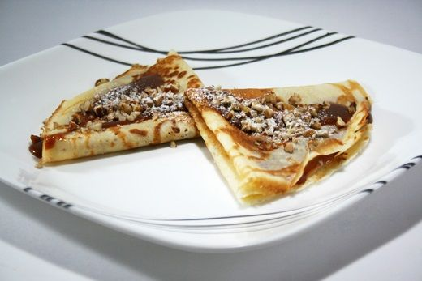

1 1/2 taza harina de trigo cernida
2 huevos entero
5 cdas mantequilla derretida
leche suficiente para hacer el atolito
1 pizca sal
1 taza cajeta o dulce de leche segun se le diga en cada pais
1/4 crema liquida
nuez picada
Preparacion:
En un bol se mezcla todo (menos la cajeta y la crema), la leche se va vertiendo poco a poco hasta darle el punto de un atole ligero se bate fuerte con un globo para que no queden grumos, se deja reposar al rededor de 15 minutos.
Se pone una sartén de teflón a que este muy caliente con una brochita o servilleta se le pone un poco de aceite o mantequilla derretida se pone un poco del atole y se moviendo la sartén en círculos se extiende a que queden del tamaño del mismo y cuando ya se ve que esta cocida se voltea para que se cueza del otro lado.
La cajeta se pone a fuego con la crema y se deja calentar hasta que este aguadita, enplatos individuales se ponen de dos a tres crepas dobladas en triangulo y encima se vierte al gusto la cajeta caliente y se pone un poco de nuez picada encima

A qui les dejo un video para su mayor entendimiento.